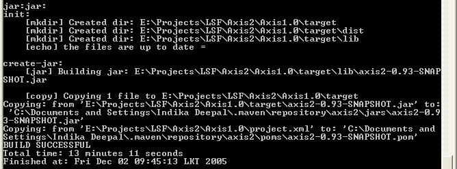
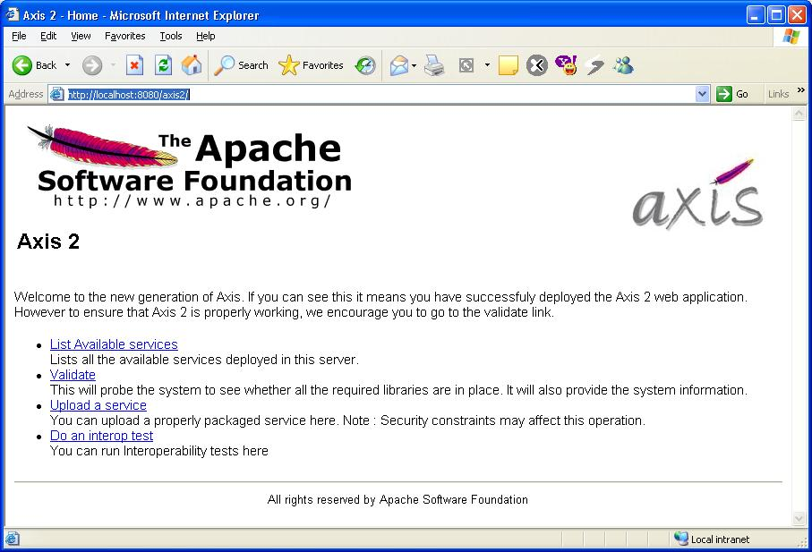
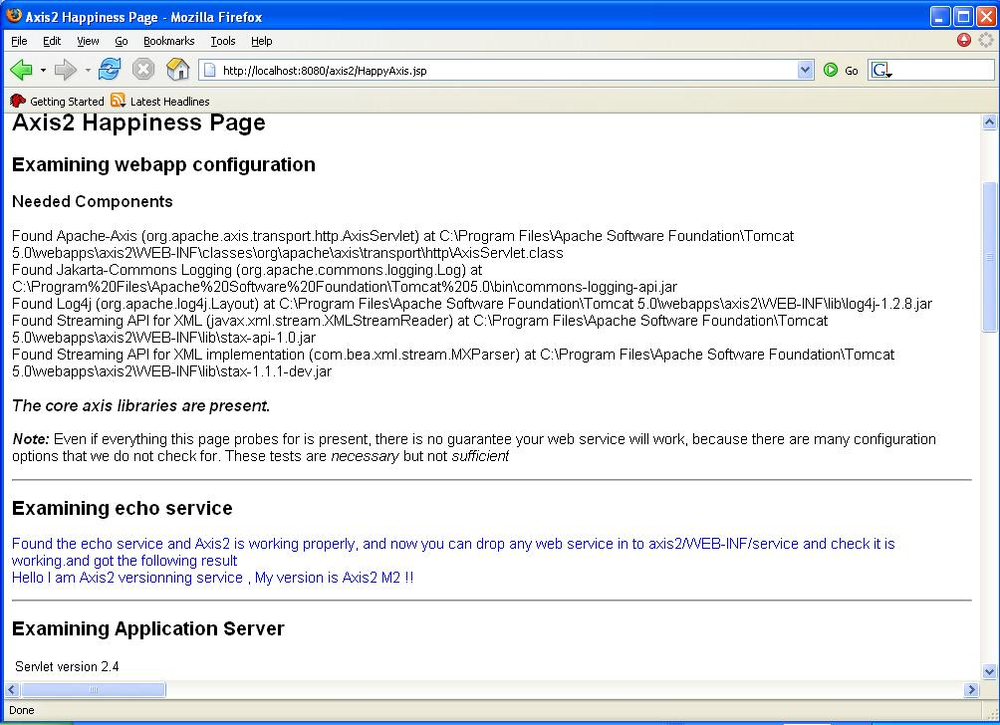
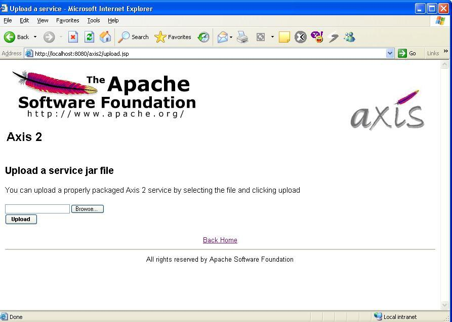
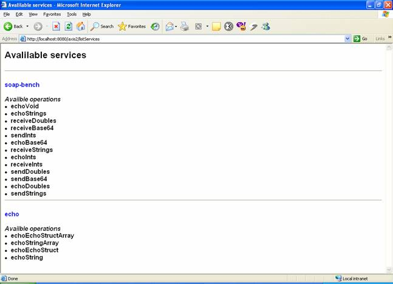
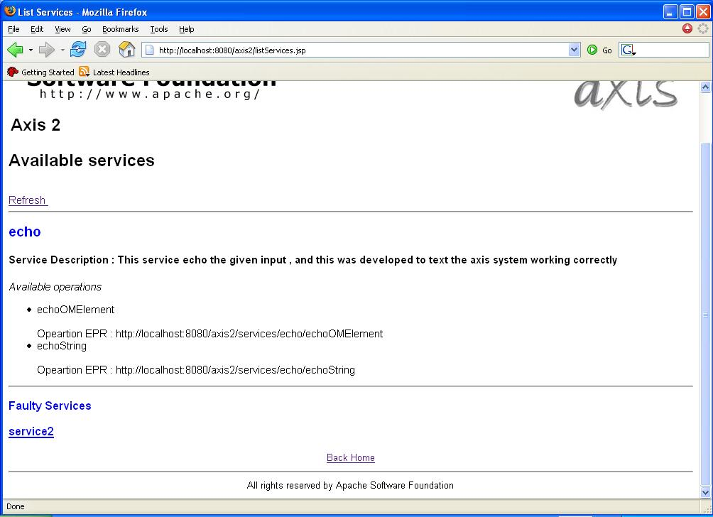
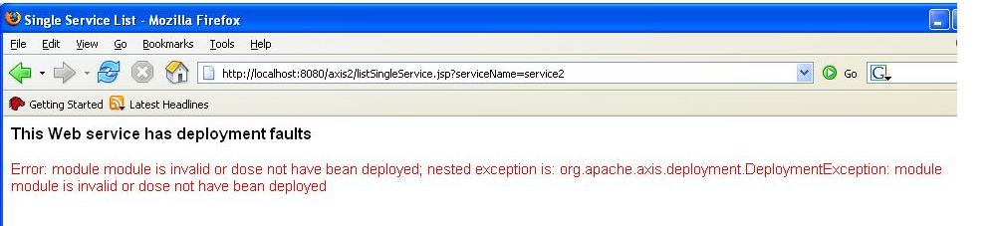

Axis 2.0 can be downloaded as a zipped binary or the source . This section describes how Axis2 can be installed either as a standalone server or as part of a J2EE compliant servlet container.
Axis2 requires the Java Runtime Environment to be properly installed. Axis2 is developed to be run on JRE 1.4 and upwards but it has not been fully tested with the latest JRE 1.5. Hence it is safe to run Axis2 with Java 1.4. If the JRE is not already in place it must be installed to proceed further. For instructions on setting up the JRE in different operating systems, please visit http://java.sun.com .
All the required jars are shipped with the binary distribution and if the source distribution is used, running the maven build will automatically download the required jars for you.
Following sections describe how each type of distribution needs to be installed. Since the process with the source distribution is similar to the binary distribution after building, the first section explains the process of building Axis2 from source. If you have the binary distribution you can skip the build sections and directly go to the binary installation section.
The Axis2 build is based on Maven . Hence the only prerequisite to build Axis2 from source distribution is to have Maven installed. Even though extensive instruction guides are available at the Maven site, this guide also contains the easiest path for quick environment setting. Advanced users who wish to know more about Maven can visit here .
For Windows users the easiest way is to download the windows installer package. Once the installer package is run, all the necessary environment variables will be properly set. Once Maven is installed, the success of the installation can be tested by typing maven version in the command prompt.
For Unix/Linux users the tar ball or the zip archive is the best option. Once the archive is downloaded expand it to a directory of choice and set the environment variable MAVEN_HOME and add MAVEN_HOME/bin to the path as well. More instructions for installing Maven in Unix based operating systems can be found here .
Once maven is properly installed it's all that is needed to start building Axis2.
The source distribution is available as a zipped archive. All the necessary build scripts are included with the source distribution. Once the source archive is expanded into a directory of choice, moving to the particular directory and running maven command will build the Axis2 jar file.

Once the command completes, the binaries (jar files in this case) can be found at a newly created "target" directory.
Note For the first Maven build (if the maven repository is not built first) it will take a while since required jars need to be downloaded. However this is a once only process and will not affect any successive builds.
The default maven build will however build only the Axis2 jar file. To obtain a WAR (Web Archive), "maven war" command should be issued. This will create a complete WAR with the name axis2.war inside the target directory.
Once this build step is complete, the binaries are ready to be deployed.
Installation of the WAR is quite simple. It's a matter of dropping the war in the webapps folders and most servlet containers will automatically install the war. However some servlet containers may require a restart in order to capture the new web application. Please refer your servlet container documentation for more information about this.
Once the WAR is successfully installed it can be tested by pointing the web browser to the http:// <host :port>/ axis2. It should produce the following page.

To ensure that everything is fine and smooth, a probing of the system can be done through the validate link. If the validation fails then the war has failed to install properly or some essential jars are missing. At such a situation the documentation of the particular servlet container should be consulted to find the problem. The following page is a successful validation. Note the statement core Axis2 libraries are present.

The Axis2 web application also provides an interface to upload services. Once a service is created according to the service specification as described in userguide that jar file can be uploaded using the upload page.

The uploaded jar files will be stored in the default service directory. For Axis2 this will be the <webapps>/axis2/WEB-INF/services directory. Once a service is uploaded it will be instantly installed.
Since Axis2 supports hot deployment one can drop the service jar directly through the file system to the above mentioned services directory and it will also cause the service to be automatically installed without the container being restarted.
To check the successful installation of a service available services link is provided. The services and the operations of successfully installed services will be displayed in the available services page.

If the service has deployment time error it will listed out those services as faulty services. And If you click on the link it will show your the deployment fault

Deployment time error message

Axis2 Administration is all about configuring Axis2 at the run time and the configuration will be transient , and more descriptions are avilable in Axis2 admin web guide